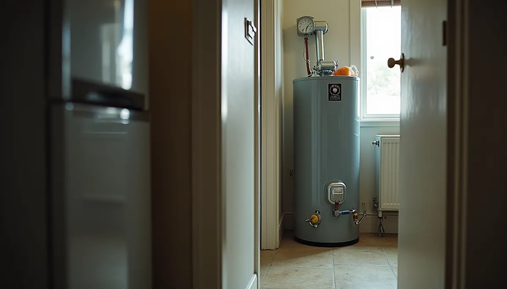
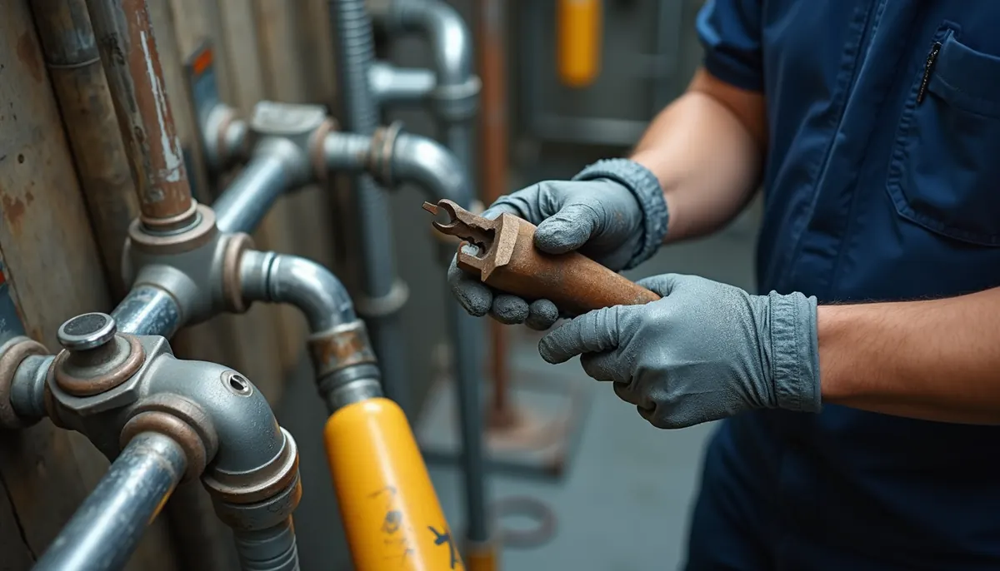
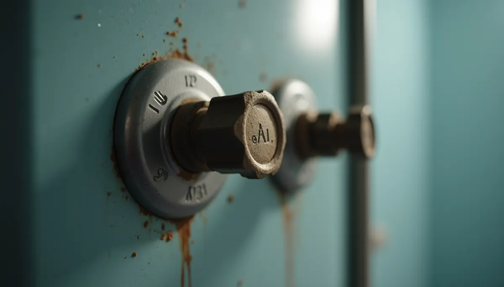

Your water heater is a crucial part of your daily routine, providing hot showers and clean dishes without a second thought. But what if it suddenly stops working? This is where your water heater warranty is invaluable, and understanding it can save you time and money. At Angle Stop Plumbing, we’ve helped many homeowners navigate the tricky waters of warranties. One of the most common mistakes is failing to fully comprehend their warranty or, even worse, not registering it at all! Let’s explore why understanding your warranty is essential and how you can safeguard your investment.
The Power of Your Warranty: Don't Be Left High and Dry
Your water heater warranty acts as a safety net for your appliance. It typically covers repairs or replacements for a set period, usually between 6 to 10 years for the tank and other components. If you're caught off guard without a valid warranty, you could end up paying anywhere from $500 to $1,500 for a major repair or a full replacement.
To make the most of your warranty, pay attention to specific details:
- Coverage specifics: Understand if it covers parts, labor, or both. For example, some warranties may not cover labor costs for installation errors, resulting in out-of-pocket expenses.
- Duration: Keep track of how long your warranty lasts. Mark it on your calendar! If your warranty lasts 8 years, for instance, setting reminders for maintenance checks can help avoid costly surprises as the deadline approaches.
- Water Quality: Review the exclusions, majority of water heater manufacturers require scale prevention devices (Filters) on the water supply.
Knowing these details in advance can eliminate confusion during a crisis and help manage costs effectively.

Don't Skip This Step: Water Heater Warranty Registration is a Must!
One of the most critical steps after installing a new water heater is completing the warranty registration. Many homeowners mistakenly assume their warranty is automatically activated. Most manufacturers require you to register your water heater within 30 days of installation. Failing to do this can leave you without coverage and potentially facing unexpected costs.
Make it a priority to complete the registration form or register online through the manufacturer’s website. Keeping a copy of the warranty documentation in a safe spot is vital, as it allows quick access to information when it’s time to file a claim or verify registration.
Further, if you make any modifications or hire a plumber for repairs, make sure to keep the warranty intact. Improper handling during maintenance might void your coverage, leaving you vulnerable when repairs are needed.
Regular Maintenance: Keep Your Warranty Valid
Regular maintenance goes beyond just prolonging the life of your water heater; it’s necessary for keeping your warranty valid. Many warranties stipulate that certain tasks must be performed according to the manufacturer’s recommendations, including flushing the tank, checking for leaks, or inspecting elements like anode rods.
Having an annual maintenance checkup from a plumbing professional like Angle Stop Plumbing can enhance your water heater's efficiency and help identify minor issues before they escalate. In fact, around 80% of water heater failures can be avoided with regular maintenance. Keep detailed records of these maintenance activities, as they not only prove compliance with warranty requirements but also strengthen your case should you need to file a claim later.

What to Do When Problems Arise
If you begin to notice issues, like unusual noises, fluctuating water temperatures, or leaks, take action immediately. Contact a plumber promptly and have your warranty claim ready to go. This can significantly reduce your repair costs and reduce your stress.
Before calling, gather your warranty documentation and any important information, such as the model and serial number of your water heater. This preparation can speed up your claims process.
When filing a claim, follow these key steps:
- Contact customer service: Reach out to the manufacturer or the retailer where you purchased the unit.
- Document the issue: Clearly explain the problem and provide any necessary documentation.
- Schedule repairs: Arrange for an inspection and repairs, either through a recommended technician or another approved service provider such as Angle Stop Plumbing.
Following these steps ensures your warranty will cover the repair costs when you need it most.
Final Thoughts: Protect Your Investment
Your water heater is fundamental to your home, but its importance often goes unnoticed until something goes wrong. Understanding your warranty, registering it promptly, performing regular maintenance, and knowing how to act when problems arise are crucial steps to protecting your investment.
Staying organized with your warranty documentation can save you from anxiety over unexpected repair costs. Instead, focus on enjoying hot showers and clean dishes that your reliable water heater effortlessly provides. Actively managing your warranty will help ensure your household hero continues to work well for years to come!
